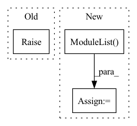

Pattern ID :2126
Before Change
super().__init__()
raise NotImplementedError()
def forward(self, input):After Change
weights.append(nn.Linear(channels[-1], _channels))
biases.append(nn.Linear(channels[-1], _channels))
self.fc_weights = nn.ModuleList( weights)
self.fc_biases = nn.ModuleList(biases)
def forward(self, input):
In pattern: SUPERPATTERN
Frequency: 3
Non-data size: 3
Instances Fragment ID: 5176877
Project Name: tky823/dnn-based_source_separation
Commit Name: ef24a393e941b1563617f711a1438b31488a1df3
Time: 2021-06-08
Author: 40362510+tky823@users.noreply.github.com
File Name: src/models/cunet.py
M Class Name: ControlDenseNet
N Class Name: ControlDenseNet
M Method Name: __init__(6)
N Method Name: __init__(10)
M Parent Class: nn.Module
N Parent Class: nn.Module
M File Name: src/models/cunet.py
N File Name: src/models/cunet.py
M Start Line: 329
M End Line: 336
N Start Line: 336
N End Line: 347
Before Change
elif self.config["global_pool"] == "sum":
self.global_pool = geometric.global_add_pool
else: // max
raise ValueError("{} pooling is not supported" )
def forward(self, positions):
batch_size = positions.size(0)After Change
// pooling layers
if self.config["graph_pooling"]:
self.gpool_layers = nn.ModuleList()
for _ in range(0, self.config["conv_depth"]):
self.gpool_layers.append(
DynamicTopKPool(self.config["EConv_feature"], k=self.config["k_neighbors"], pool_ratio=self.config["pool_ratio"]))
Fragment ID: 5176874
Project Name: maria-korosteleva/garment-pattern-estimation
Commit Name: 58004a47b8e9b3137f4c2616414bb5405d5647ed
Time: 2020-09-24
Author: mariako@kaist.ac.kr
File Name: nn/net_blocks.py
M Class Name: EdgeConvFeatures
N Class Name: EdgeConvFeatures
M Method Name: __init__(3)
N Method Name: __init__(3)
M Parent Class: nn.Module
N Parent Class: nn.Module
M File Name: nn/net_blocks.py
N File Name: nn/net_blocks.py
M Start Line: 127
M End Line: 136
N Start Line: 95
N End Line: 143
Before Change
elif dim ==3:
make_conv = ConvNormActive3D
else:
raise ValueError("dim should be 2 or 3")
// 构建projection
if self.out_channels != self.in_channels: // 输入输出channel不一样，则添加projection改变输入通道,用于不同stage的过渡处After Change
self.conv_list.append(ConvNormActive(in_channels, out_channels, kernel_size=3, norm=norm, active=active, gn_c = gn_c, dim = dim))
self.conv_list.append(ConvNormActive(out_channels, out_channels, kernel_size=3, norm=norm, active="None", gn_c = gn_c, dim = dim))
elif self.type == "131":
self.conv_list = nn.ModuleList( [])
self.conv_list.append(ConvNormActive(in_channels, middle_channels, kernel_size=1, norm=norm, active=active, gn_c = gn_c, dim = dim, padding=0))
self.conv_list.append(ConvNormActive(middle_channels, middle_channels, kernel_size=3, norm=norm, active=active, gn_c = gn_c, dim = dim))
self.conv_list.append(ConvNormActive(middle_channels, out_channels, kernel_size=1, norm=norm, active="None", gn_c = gn_c, dim = dim, padding=0))
else: Fragment ID: 5176875
Project Name: wamawama/wama_modules
Commit Name: b2bf89e72b262002500e8271f984d6f8afac7eb3
Time: 2022-10-25
Author: wmy19970215@gmail.com
File Name: wama_modules/BaseModule.py
M Class Name: ResBlock
N Class Name: ResBlock
M Method Name: __init__(9)
N Method Name: __init__(6)
M Parent Class: nn.Module
N Parent Class: nn.Module
M File Name: wama_modules/BaseModule.py
N File Name: wama_modules/BaseModule.py
M Start Line: 362
M End Line: 384
N Start Line: 357
N End Line: 389